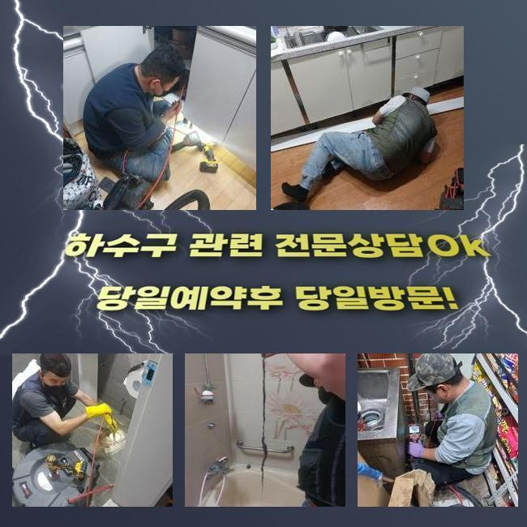
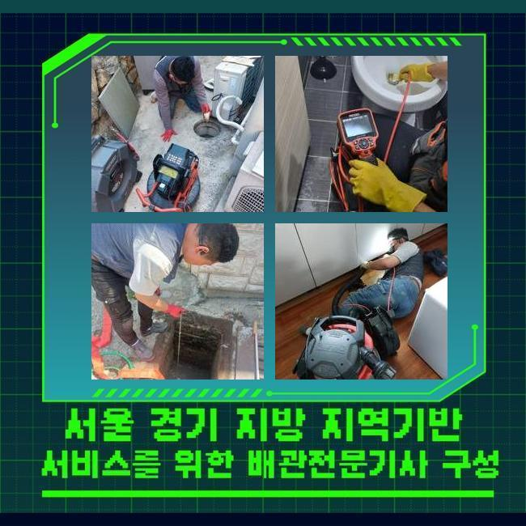
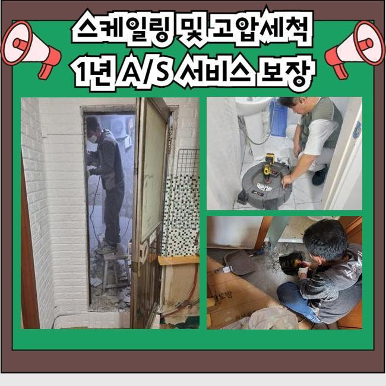
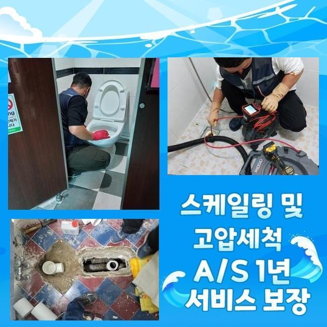
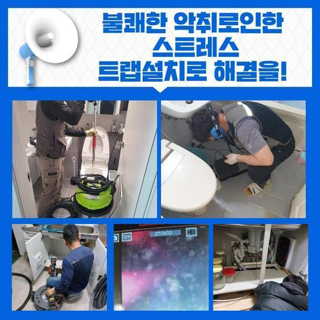

🏠 안양 박달2동화장실하수구막힘 하수구뚫는곳 누수
안양 싱크대막힘 전문 시공 후기

📋 작업 개요
- 위치: 안양
- 서비스 유형: 싱크대막힘, 하수구막힘, 배관막힘, 누수수리, 뚫는업체, 배관청소, 악취차단
- 작업 일시: 2025. 4. 16. 20:50
- 업체명: 하수구수사대 (010-5615-2118)
🔍 문제 상황
안양 박달2동화장실하수구막힘 하수구뚫는곳 누수
주방 내부에서 물이 일시에 중지된다면 그에 따른 애로사항이 치명적일 수도 있어요
이러한 고통스러운 문제를 잠재우기 위해서 집안 전반에 설치된 하수 시스템에서의 장애가 생기면 근원이 어딘지 파악하여 확실하게 고쳐드립니다
준비태세를 갖추고 저희전문가가 찾아갔던 곳은 다세대였고 그 중 한세대에서 주방에서 물을 전혀 쓸 수 없는 상황이라고 상황을 알려주셨습니다
싱크대의 안쪽에서 물이 역행하는 증상이 계속 이어지는데다가 구린내까지 확산되고 아래에는 물기가 퍼져버린지라 복합적인 문제점이 있었어요
다세대 주거지의 경우 싱크대의 하부에는 방수막 형성을 하지 않고 넘어갈 때도 있어 빨리 물을 잡지 못하면 아랫세대에 물이 새버릴 위험성이 있어요
공동 하수관은 모두 이어져있기 때문에 다발적인 막힘 현상이 나타나기도 해요
어떤 상황인지 확인하니 하수가 이동할 경로가 틈도 없이 틀어막혀서 하부장 하단까지 물이 차버렸고 하수에 녹은 침전물도 함께 올라왔습니다
희뿌연 하수구 물이 여기저기 퍼져버렸고 매립되어 있던 배수통에도 물기가 빠져나오는 중이었어요
주방 배관을 살펴보면 오염물질이 빠져있거나 기름기 어린 입자들이 층을 이루고 있는 상태일 때가 많습니다

🔎 원인 분석
💡 전문가 진단: 정밀 진단 장비를 사용하여 슬러지의 고착 여부를 판명하고 타격/세척 작업을 실시했습니다.
이와 같은 이물질이 우후죽순 커지다보면 더는 못 버티고 역행을 하게 됩니다
막힘 사건의 동기와 문제를 띤 파트를 조사해 제일 적합하다고 생각되는 장비를 선별합니다
또한 주방배관을 분해할 때는 물이 터져 나오지 않게 얇은 비닐으로 사전 준비 단계를 철저히 하고 있습니다
주름관을 떼기 전에 비닐을 배치하여 오염수가 유입되지 않게 할 시공을 거쳤습니다
떼어내자마자 안쪽에 비축되었던 고여있던 액체와 침전물들이 탁 터지듯 주변으로 퍼졌습니다
호스 안을 보니 모든 틈 새 마다 기름기가 잔뜩 결합되어 있는 형상을 목격하게 됐습니다
주방 안의 배관들은 생각보다 좁아서 음식물 잔해들을 수차례 흘려보내면 배수로 속이 막혀가다가 결국에 정체되어 버립니다
주방 배관이 차단되게 만든 주체로 여겨지는 찌꺼기들을 수거하기 위하여 석션기를 가동하여 잔여물을 흡입했습니다
잔수가 있는 상황 속에서는 막힘의 근본적인 이유를 단정하기 어려우므로 석션을 먼저 해야합니다
잔수를 없앴는데도 불구하고 내부 상황이 확실하게 나타나지 않았기 때문에 저희의 촬영 내시경기를 삽입하여 관로 속을 살펴보기로 정했습니다
얕은 깊이로 들어갔음에도 전반이 붉은 빛이었는데 끈적한 기름기가 불빛과 접촉하여 나타나는 현상이었습니다

🔧 작업 과정
다시 말하자면 기름진 침전물이 풍부하게 축적됐다는 뜻이었으며 관로와 결합된 슬러지를 삭제시키기 위해서는 샤프트처럼 강인한 기기가 잘 맞을 때가 많습니다
장비의 끝에 달린 딱딱한 노커를 통해 배관에 딱 붙어버린 찌꺼기를 해체시키고 대형 사이즈는 소규모로 분해하는 역할도 수행하는 장치라고 소개드릴 수 있겠습니다
점착성있는 기름층이 다량 발견되었기에 문제되는 곳들에 샤프트를 접촉시켜 스케일링을 할 필요성이 있었어요
샤프트를 통해 신중하게 청소 절차를 거치면서 딱딱한 유분막을 무리하지 않는 선에서 파편화 하였습니다
숨은 구역에도 기름기가 빼곡하게 축적됐다보니 시공이 순조롭고 편안하게 흘러가지는 않아서 대체 기기의 보조가 있으면 좋겠다고 판단했습니다
고압의 강력한 석션기를 써서 내부의 조각들을 남김 없이 빨아내주는 단계였습니다
큰 덩어리를 잘게 자르고 흡입력을 통해 뒤처리하는 작업들을 되풀이하며 관로 청소를 성실히 담당했습니다
남은 분량이 없을 때까지 서서히 집중하여 청소 절차를 수행해다보니 봉쇄됐던 통로가 점점 여유있게 변하는 모습을 목격할 수 있었습니다
선명하게 비춰주는 카메라를 관찰해봐도 관로 속이 맑아지는 현황을 지체 없이 곧바로 확인할 수 있었기에 배수로의 재정비가 완성되어 간다는 예상이 되더라고요
내부 고착물들을 모조리 소거시키고 나서는 낡았던 주름관과 배수통 설비까지도 교환을 해드렸습니다
낡아버린 배수통과 주름 호스는 보통 사실상 세월이 가면 점차 약화되면서 하수가 새버릴 수 있으며 냄새를 양산하게 됩니다
이러한 부속품들을 규칙적으로 점검하는 것이 주방에서의 하수 곤란을 사전에 처치하기 위한 방식일 수 있습니다
재장착을 끝마치고 배수 테스트를 거치면서 물이 잘 방출되는지를 진단해 보았어요
통수검사는 물을 계속 부어주면서 잘 흘러나가는지 완성도를 보는 것입니다
배출되는 소리는 경쾌한지 체크했고 새로 교체한 부속들을 만져보며 부실한 곳이 없는지 여러 번 봐주며 작업을 완수합니다
속이 시원한 모습으로 배출이 이루어졌고 새로운 부속도 문제가 없었기에 싱크대에서 일어난 애로사항들도 더는 존재하지 않았어요


✅ 작업 완료
고객님의 댁을 빠르게 뜨는 것이 아니라 옆에 계시던 고객님께 배수구 관리법도 요목조목 전달해 드렸습니다
배수구를 말끔하게 유지되도록 관리하려면 요리 중에 생기는 기름을 제대로 치우는 것이 필요할 거라고 강조했습니다
하수구가 깔려있는 가정집이나 상가 등에서 하수구 정비를 받는 것도 주의해야 하지만 통로가 쾌적하게 유지되도록 사용 시에 유의하는 게 굉장히 중요한 부분입니다
배수상태가 부실할 때 차일피일 미루다보면 내부에 자리한 고착물이 거대해지기 때문에 더 심한 악영향을 유발하게 돼요
하수구에 이상증세가 목격되면 미루는 것이 아니라 전문가에게 컨택해서 조언을 구하셔서 통제불능의 하수구를 정상화하시길 바라요


⚠️ 베란다 누수 및 방수 관리 방법
- ✅ 비가 많이 올 때 창틀 주변이나 아래층 천장에 얼룩이 생기는지 정기적으로 확인해 보세요.
- ✅ 우수관 주변 실리콘 마감이 들뜨거나 깨진 틈새가 있는지 손상 여부를 수시로 체크하세요.
- ✅ 베란다 바닥 타일의 줄눈(메지)이 소실되면 그 틈으로 물이 침투하여 누수가 유발됩니다.
- ✅ 누수 의심 증상 발견 시 방치하면 아래층 손실이 커지므로 즉시 전문가의 진단을 받으십시오.
💡 핵심 정리
- 확실한 장비 작업(내시경 점검 및 샤프트 스케일링)으로 원인을 뿌리 뽑습니다.
- 작업 후 1년 이내에 동일한 부위 재발 시 100% 무상 A/S 서비스를 보장합니다.
- 서울 · 경기 · 인천 전 지역에 24시간 언제든 긴급 출동할 수 있도록 항시 대기 중입니다.
❓ 자주 묻는 질문 (FAQ)
🚨 안양 싱크대막힘 문제로 고민이신가요?
정확한 원인 진단과 확실한 시공으로 재발 없는 해결을 약속드립니다.
24시간 긴급 출동 | 서울 · 경기 · 인천 전지역 | 1년 내 재발 시 무상 A/S